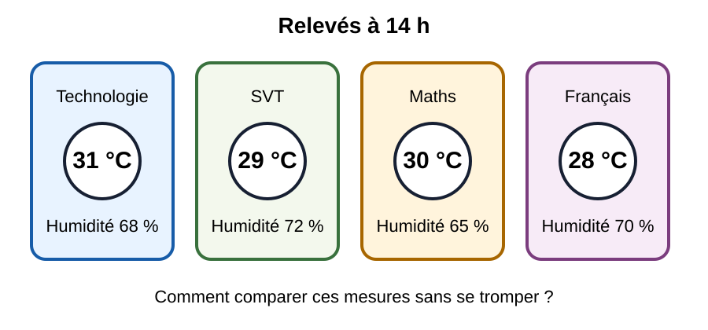
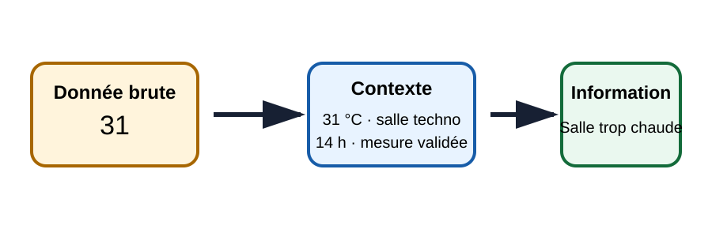
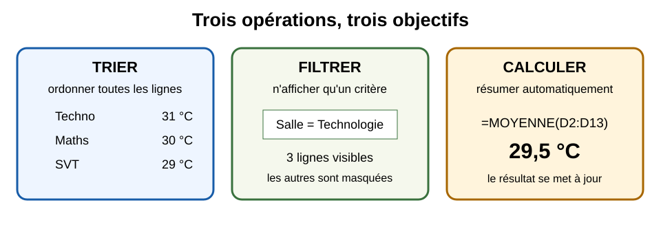
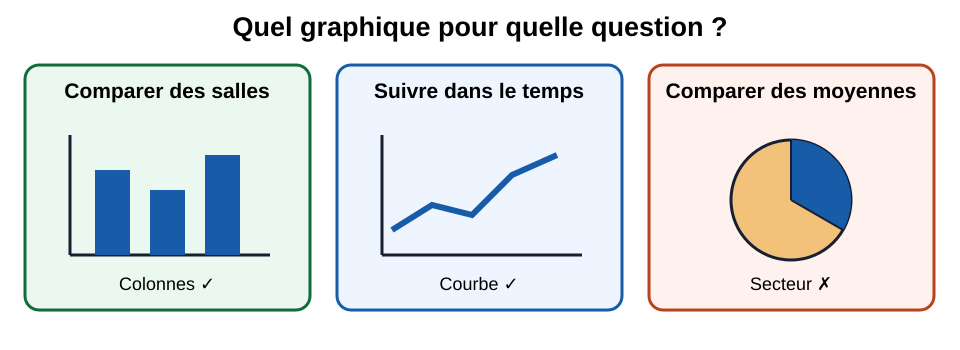

🌡️ Situation déclenchante
À 14 h, certaines salles du collège Joseph-Lagrosillière sont jugées trop chaudes. Le principal dispose de relevés de température, mais ils sont mélangés, incomplets et difficiles à interpréter. Il demande à la classe de produire un tableau fiable et une recommandation.

Problématique : comment transformer des mesures brutes en informations fiables pour prendre une décision ?
Objectifs et prérequis
| Je dois savoir… | Je vais apprendre à… | Production finale |
|---|---|---|
| ouvrir un fichier, saisir du texte et des nombres | collecter, contrôler, trier, filtrer, calculer et représenter des données | un tableur commenté et une recommandation de 5 lignes |
Activité 1🔎 Collecter et fiabiliser
Question : toutes les valeurs relevées peuvent-elles être utilisées directement ?

Construire une table de données
- Ouvrir le fichier
exo_tableur_debut.xlsx. - Créer les colonnes : Date, Heure, Salle, Température (°C), Humidité (%), Observateur.
- Saisir les 12 relevés fournis par le professeur.
- Repérer deux valeurs impossibles ou douteuses et les signaler sans les supprimer.
- Ajouter une colonne « Validité » avec les valeurs : valide, à vérifier.
Production attendue : un tableau comportant 12 lignes, des unités explicites et deux anomalies justifiées.
💡 Aide graduée
Aide 1 : une ligne correspond à un relevé. Aide 2 : une température de 280 °C dans une salle est probablement une erreur de saisie. Aide 3 : ne confonds pas cellule vide et valeur zéro.
✅ Correction exhaustive
Les intitulés sont placés sur la première ligne. Les températures sont des nombres, pas du texte. « 280 » est marqué « à vérifier » car la valeur est incompatible avec une salle occupée ; une humidité de 0 % est également douteuse. Une valeur suspecte est conservée pour garder la trace du relevé, mais elle est exclue des calculs tant qu’elle n’est pas confirmée.
Activité 2🧮 Trier, filtrer et calculer
Question : comment retrouver rapidement les salles les plus chaudes sans lire toutes les lignes ?

Interroger le tableau
- Trier les températures de la plus élevée à la plus basse.
- Filtrer uniquement les relevés de la salle de technologie.
- Calculer avec une formule : moyenne, minimum et maximum des valeurs valides.
- Utiliser
NB.SIpour compter le nombre de relevés supérieurs ou égaux à 30 °C. - Recopier dans une zone « Résultats » les quatre indicateurs obtenus.
Production attendue : quatre résultats calculés automatiquement, accompagnés d’une phrase d’interprétation.
💡 Aide graduée
Aide 1 : un tri change l’ordre des lignes ; un filtre masque temporairement certaines lignes. Aide 2 : une formule commence par « = ». Aide 3 : exemple de syntaxe : =MOYENNE(D2:D13).
✅ Correction exhaustive
Le tri décroissant place la valeur la plus élevée en premier sans séparer les colonnes. Le filtre « Salle = Technologie » n’efface aucune donnée. Les formules utilisent une plage contenant uniquement les mesures validées. =NB.SI(plage;">=30") compte les valeurs répondant au critère. Une interprétation correcte distingue le maximum ponctuel de la moyenne générale.
Activité 3📈 Représenter et décider
Question : quel graphique permet de comparer clairement les salles et de justifier une action ?

Produire une recommandation
- Calculer la température moyenne de chaque salle.
- Créer un diagramme en colonnes avec un titre, les noms des salles et l’unité °C.
- Ajouter une ligne ou une annotation indiquant le seuil choisi de 30 °C.
- Rédiger cinq lignes : constat, preuve chiffrée, salle prioritaire, action proposée, limite des données.
- Enregistrer sous
5e_Nom_Prenom_confort_thermique.xlsx.
Production attendue : un graphique lisible et une décision argumentée à partir d’au moins deux résultats.
💡 Aide graduée
Aide 1 : les salles sont des catégories ; un diagramme en colonnes facilite leur comparaison. Aide 2 : évite les effets 3D. Aide 3 : cite des nombres précis dans la conclusion.
✅ Correction exhaustive
Le graphique comporte un titre explicite, un axe horizontal avec les salles et un axe vertical en °C. La salle dont la moyenne dépasse le plus le seuil est prioritaire. Une recommandation recevable est par exemple : installer d’abord un dispositif d’ombrage dans la salle concernée, puis refaire des mesures sur plusieurs jours. La conclusion mentionne que 12 relevés ne suffisent pas à décrire toute l’année.
Évaluation et différenciation
| Parcours A — accompagné | Parcours B — standard | Parcours C — approfondissement |
|---|---|---|
| fichier préformaté, plages indiquées, aide formule | 12 relevés, quatre indicateurs et graphique | ajout de médiane, comparaison moyenne/médiane et critique du protocole |
Évaluation : fichier structuré 5 pts ; contrôles et formules 6 pts ; graphique 4 pts ; recommandation argumentée 5 pts.
Bloc Pronote — copier-coller
Contenu : 5e_C1.1 — Collecter, contrôler, trier, filtrer, calculer et représenter des données dans un tableur. Réalisation d’une étude sur le confort thermique des salles du collège.
Travail à faire : terminer le fichier tableur, vérifier les formules et revoir la synthèse. Lien direct : https://pll-process.github.io/en-ligne-pour-le-cycle-4/theme-1-objets-systemes-usages-interactions/C1-decrire-les-liens-entre-usages-et-evolutions/5e/5e_C1.1/sequence_5e_C1.1_donnees_tableur_2026.html
Suivi enseignant
Durée estimée : 3 × 55 min. Prévoir un tableur compatible XLSX. Vérifier avant la séance que les fichiers d’exercice s’ouvrent sur les postes. Réinvestissement possible dans le jardin connecté : mesures d’humidité du sol et de température.
🧩 Bilan et auto-positionnement
Je sais collecter des données contextualisées, repérer une anomalie, trier et filtrer un tableau, utiliser des formules et choisir une représentation adaptée.
Auto-positionnement : 🟢 autonome · 🟠 encore besoin d’aide · 🔴 à reprendre avec le professeur.
🧠 Prêt·e à t’entraîner ?
24 questions sur la collecte, le contrôle, le tri, le filtre, les formules et les graphiques, dont plusieurs questions illustrées.
🚀 Ouvrir le QCM d’entraînement🎁 Bonus (facultatif — hors parcours obligatoire)
- Défi citoyen : proposer une règle de protection des données lors d’une enquête auprès des élèves.
- Défi technique : comparer moyenne et médiane lorsqu’une valeur extrême est présente.
- Défi Martinique : imaginer un protocole de mesure pendant une semaine de forte chaleur et d’humidité.
Ces défis sont hors barre de progression : aucun élève n’est pénalisé de ne pas les réaliser.